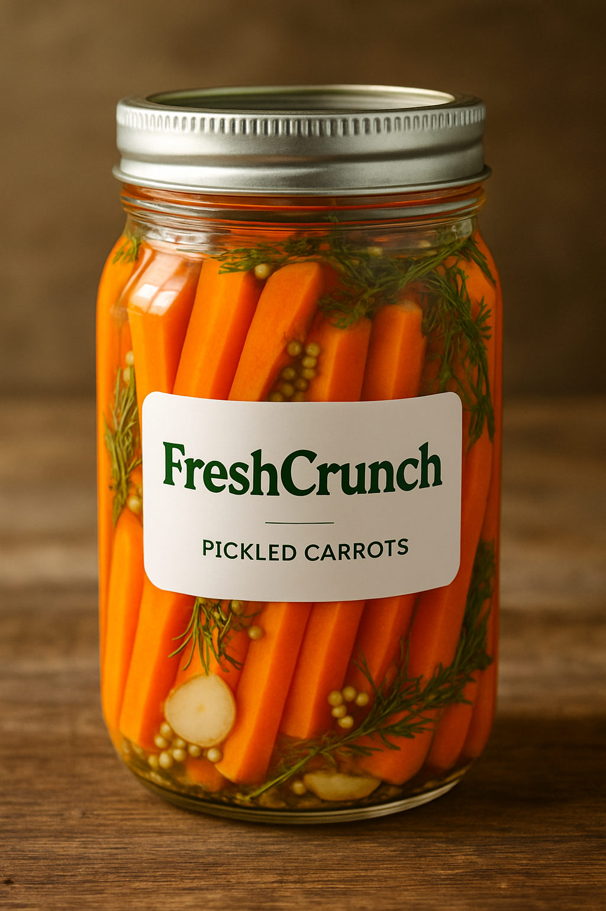
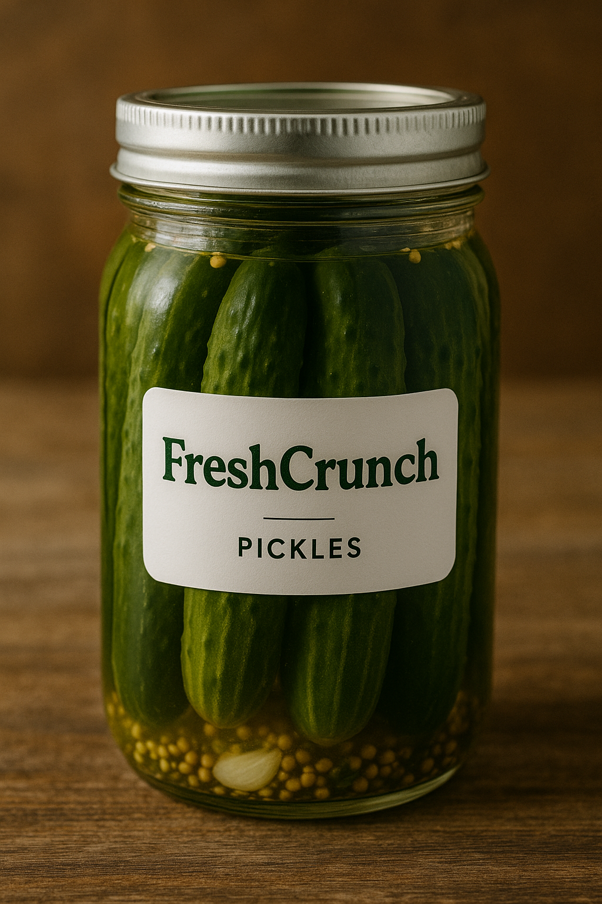
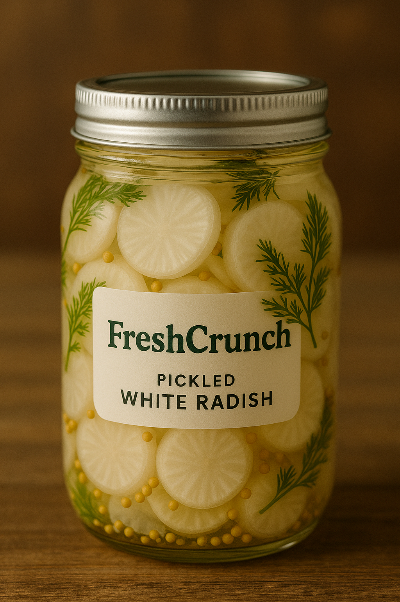
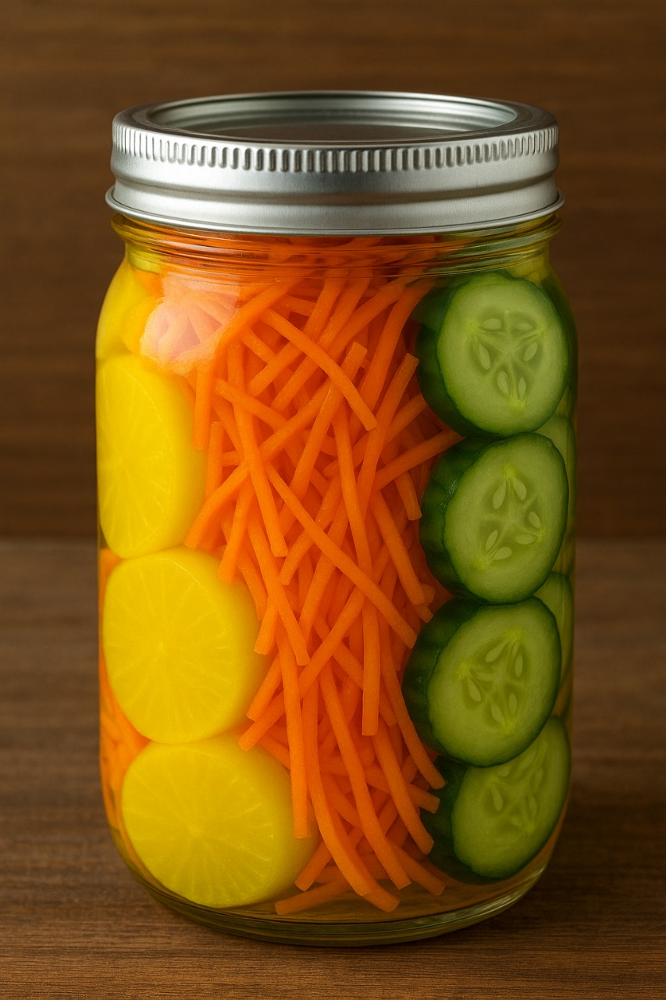

Our Products

Carrot pickle
Vibrant and crunchy carrot pickles with mild sour flavor.
Price: Rp. 56.875

Cucumber Pickle
Fresh cucumber pickles with sweet-sour taste and extra crunch.
Price: Rp. 56.875

Radish Pickle
Fermented radish with a mild kick and fresh aroma.
Price: Rp. 87.500

Pickled radish and cucumber combo
A zesty duo of crunchy radish and cucumber freshly pickled for bold, refreshing flavor!
Price: Rp. 105.000

Pickled carrot and cucumber combo
Crisp, tangy carrots and cucumbers perfectly pickled for a fresh, flavorful bite!
Price: Rp. 35.000

Combo pickled radish, carrot and cucumber
Three times the crunch! A vibrant mix of radish, carrot, and cucumber pickled to perfection for a bold, tangy taste.
Price: Rp. 122.500